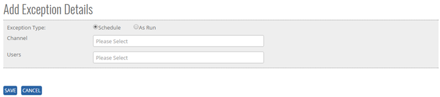
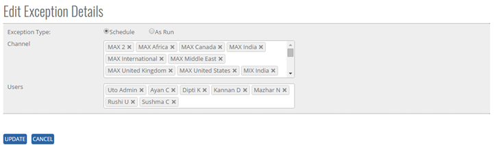


	<section>
		<article>

			<h2>Exception<span></span></h2>
			<div>
				<p></p>

				<p>Exception comes under master module. It can be accessed by user who has rights for this module.</p>

				<p>Go To >> Master >> Exception>><b>ADD</b></p>

				<p>Click on add button at top right corner of the page and the following page will be open.</p>

				<div class="triangle-border top">				
					
				</div>

				<p><b>To ADD an "Exception" in the system, system will have following fields.</b></p>

				<p>- User can select Exception Type from Radio button (as option) "Schedule" or "Run" </p>

				<p>- User can select Single or Multiple Channel from the List Box</p>

				<p>- User can select Single or Multiple User from the List Box</p>

				<p><b>Schedule:</b> If user selects <b>Schedule</b>, then emails will be sent to defined users when any exceptions are raised during schedule file upload on selected channels.</p>

				<p><b>AS Run:</b> If user selects <b>As Run</b>, then emails will be sent to defined users when any exceptions are raised during as run file upload on selected channels.</p>

				<p><b>Note:</b> - '*' represents the respective object is mandatory.</p>

				<p>Click on <b>Save Button</b> user will get alert message "Exception Record added successfully"</p>

				<p>Click <b>Cancel Button</b> cancel the add operations and previous window will appears and data should not saved</p>


				<p><b>Modifying Existing Exception</b></p>

				<p>The user who has right to edit can edit "Exception" in the system.</p>

				<p>Click <b>Edit</b>, Edit Recoupment Type Column will be shown to User as added previously.</p>

				<p>Go To >> Master>>Exception>>Click Edit Button (Edit Exception Details) >> <b>EDIT</b></p>

				<p>System will allow editing all the Exception List. </p>

				<div class="triangle-border top">				
					
				</div>

				<p>Click <b>Update</b> to save the currently added operations, user will get alert message <b>"Exception Record Updated Successfully"</b>.</p>

				<p>Click <b>Cancel</b> to cancel the add operations and previous window will appears and data should not save.</p>

				<p>Click <b>Delete</b> to delete the Exception record </p>


				<p><b>Search /Show All Criteria</b></p>

				<p>- User can search By Channel Name and then click on <b>Search</b>, it will show the result as per the search criteria. User can search Channel name by single alphabet.</p>

				<p>- If user want to check all Channel Name then click on <b>Show All</b> Button. It will show the list </p>

				<p>- User can search by user name and then click on Search, it will show the result as per search criteria.</p> 

				<p>- Click on page no, System will navigate the desired page, per page 10 records will be displayed.</p>
			</div>
		</article>
	</section>